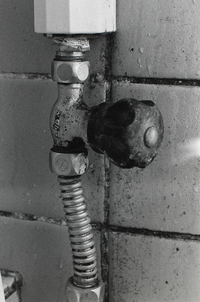
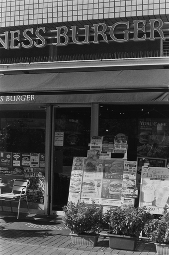
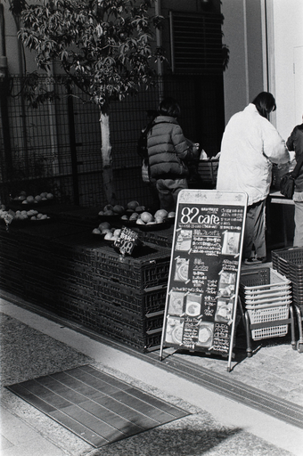
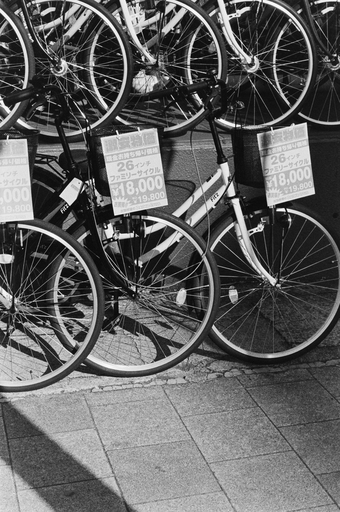
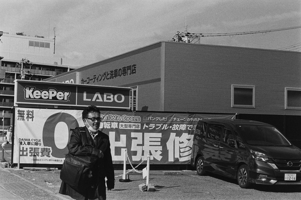
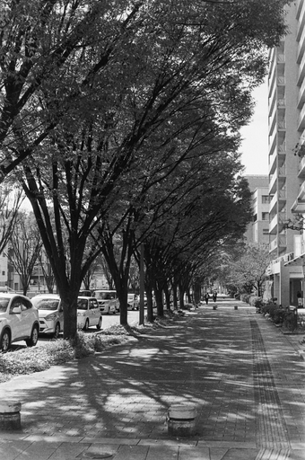
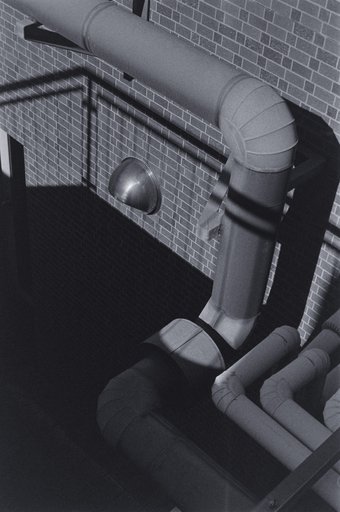
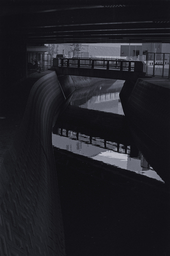
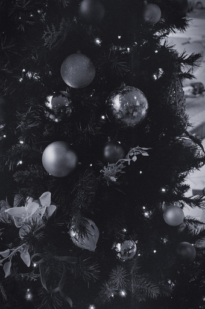

11 月 28 日 ( 木 )
ILFORD HP5+ の残念フィルム大量生産について
ILFORD HP5+ でいいネガが得られないということを、これまでたびたび書いてきました。その原因がわかりました。
原因はすごくシンプルでした。露出が足りなかっただけでした。露出が足りず、コントラストがまったく得られてなかったわけです。
そんなど素人のようなことを今まで……、と総ツッコミを受けそうです。弁明させてください。カメラの露出計が経年劣化で駄目になっていたのでした。セコニックを一緒に持ち出して入射光式で計測したところ、概ね良好な結果が得られました。
以下 26 日に撮影したものを貼っていきます。F 値はほぼすべて F8.0 で、日向がメインのものは F16 にしています。またシャッタースピードを 1 段遅くして +1EV 程度の補正をした画像も撮り、明るい部分を飛ばさないように気をつけながらもシャドーのディテールが良好な方を選んでいます。
露出補正の単位が普通使われる 1/2EV や 1/3EV でなく 1EV としたのは、日差しの強さでコントラストがかなり強かったためです。これくらいの補正をしないとシャドーのディテールが失われてしまいます。
また -1EV を撮らずに 2 枚セットとしたのは、これまでの失敗ネガの量産から -1EV では間違いなくコントラストがないネガしか得られないことが確信できたからです。
セコニックの ASA 設定は HP5+ 公称感度の 400 にしています。
なおデータは記録していないのでシャッタースピードは覚えておりません ＞＜
とはいえ、屋外での撮影では Sunney 16 ルールがほぼ全カット適応できましたので、屋外で撮影したものには Sunney 16 に従った上に露出補正を加えたシャッタースピードを記しておきます。

PENTAX MX, smc PENTAX-A 50mm, F8.0, ILFORD HP5+ ASA 400, Rodinal 1+50, 20℃, 11min, 60/60/3

PENTAX MX, smc PENTAX-A 50mm, F16.0, 1/250, ILFORD HP5+ ASA 400, Rodinal 1+50, 20℃, 11min, 60/60/3

PENTAX MX, smc PENTAX-A 50mm, F16.0, 1/250, ILFORD HP5+ ASA 400, Rodinal 1+50, 20℃, 11min, 60/60/3

PENTAX MX, smc PENTAX-A 50mm, F16.0, 1/250, ILFORD HP5+ ASA 400, Rodinal 1+50, 20℃, 11min, 60/60/3

PENTAX MX, smc PENTAX-A 50mm, F16.0, 1/250, ILFORD HP5+ ASA 400, Rodinal 1+50, 20℃, 11min, 60/60/3

PENTAX MX, smc PENTAX-A 50mm, F8.0, 1/250, ILFORD HP5+ ASA 400, Rodinal 1+50, 20℃, 11min, 60/60/3

PENTAX MX, smc PENTAX-A 50mm, F16.0, 1/250, ILFORD HP5+ ASA 400, Rodinal 1+50, 20℃, 11min, 60/60/3

PENTAX MX, smc PENTAX-A 50mm, F8.0, 1/125, ILFORD HP5+ ASA 400, Rodinal 1+50, 20℃, 11min, 60/60/3
PENTAX MX, smc PENTAX-A 50mm, F8.0, ILFORD HP5+ ASA 400, Rodinal 1+50, 20℃, 11min, 60/60/3

PENTAX MX, smc PENTAX-A 50mm, F8.0, ILFORD HP5+ ASA 400, Rodinal 1+50, 20℃, 11min, 60/60/3
PENTAX MX, smc PENTAX-A 50mm, F8.0, ILFORD HP5+ ASA 400, Rodinal 1+50, 20℃, 11min, 60/60/3
- Category :
- #日記
- #blog
- #IlfordHP5Plus
- #Rodinal